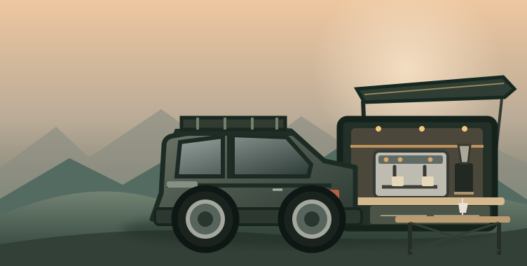

Plataforma modular.
Versión 2.
Diseño conceptual para un Suzuki Jimny 2021 blanco, con asientos traseros retirados, cuatro módulos desmontables y mobiliario en madera natural. Incluye distribución, medidas por verificar, materiales, rieles y validaciones.

01 / Distribución propuesta
Vista superior de cuatro módulos independientes, colocados sobre un bastidor rígido y desmontable.
Máquina atornillada, tapa reforzada y superficie sanitizable. No operarla sobre rieles.
Molino, WDT, tamper, báscula y cajón compacto con seguro.
Bidones separados, bomba, bandeja anti derrame y desconexión rápida.
Estación portátil ventilada, accesos eléctricos, fusibles y separación del agua.
Hipótesis de huella: 800 mm ancho × 1,000 mm fondo. La suma de espacios y paneles debe ajustarse al grosor real de estructura, separaciones y paso de rueda.
Mesa externa: plegable y con patas, no soportada únicamente en voladizo por rieles.
02 / Medidas del Jimny
Captura aquí medidas reales M1–M8. Se guardan solo en este navegador. Completa y guarda una copia antes de fabricar.
| ID | Verificación | Valor real |
|---|---|---|
| M1 | Ancho mínimo entre pasos de rueda y paneles | |
| M2 | Fondo del piso hasta respaldos delanteros | |
| M3 | Abertura trasera real (ancho × alto) | |
| M4 | Altura del piso hasta umbral de carga | |
| M5 | Altura hasta techo con plataforma nivelada | |
| M6 | Posición, tipo y carga admisible de anclajes OEM | |
| M7 | Barrido de puerta y acceso al portafiltro | |
| M8 | Dimensiones y masas de espresso/molino/batería |
03 / Materiales preliminares
No constituyen una lista definitiva de compra.
| # | Componente | Cantidad orientativa |
|---|---|---|
| 01 | Perfil aluminio estructural 30 × 30 mm | 7–9 metros |
| 02 | Contrachapado abedul/fenólico 15 mm | 1 tablero, por despiece |
| 03 | Tapa reforzada 18 mm, acabado HPL o inoxidable | Zona de espresso |
| 04 | Escuadras y placas de anclaje metálicas | 12–20 piezas |
| 05 | Tornillería M5/M6, T-nuts y tuercas de seguridad | Por diseño |
| 06 | Anclajes desmontables a puntos adecuados | 4 o más, verificados |
| 07 | Correderas 400–500 mm de extensión completa | 1 par |
| 08 | Cierres positivos de transporte | 4–8 piezas |
| 09 | Bidones de agua potable y aguas grises | 15–20 L / 20–30 L, revisar |
| 10 | Bomba potable, mangueras y conectores | Según hidráulica |
| 11 | Bandejas anti derrame y drenajes | 2 |
| 12 | Protección eléctrica, GFCI/RCD, pasacables | Según esquema eléctrico |
| 13 | Ventilación y accesos a batería | Según EcoFlow/equipo |
| 14 | Mesa plegable con patas | 600 × 450 mm conceptual |
| 15 | Antivibración y retención de equipos | Según masa y sujeciones |
04 / Rieles y seguridad
Recomendación de correderas
- Extensión completa de 400–500 mm para cajón de utensilios o mesa ligera.
- Bloqueo de apertura y cierre, con retención positiva durante conducción.
- Montaje lateral, paralelo y con la holgura del fabricante.
- Capacidad útil verificada para vibraciones y carga dinámica móvil; no usar el rating estático como capacidad en carretera.
- Referencia para comparar: Accuride 9308E.
Restricciones del prototipo
- El espresso, el molino y la batería deben contar con retención mecánica para transporte.
- Separar físicamente agua potable, desechos y circuito eléctrico.
- No obstruir ventilación de estaciones de energía.
- Distribuir masa cerca del eje; revisar peso total, ejes, ocupantes y equipamiento.
- Antes de operar alimentos o bebidas, validar normativa sanitaria local.
05 / Lista de validación
Usaremos este checklist para pasar de concepto a planos de corte definitivos.